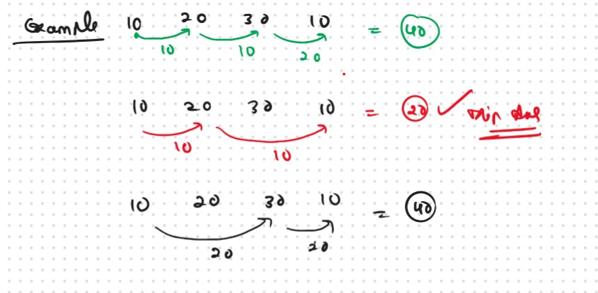
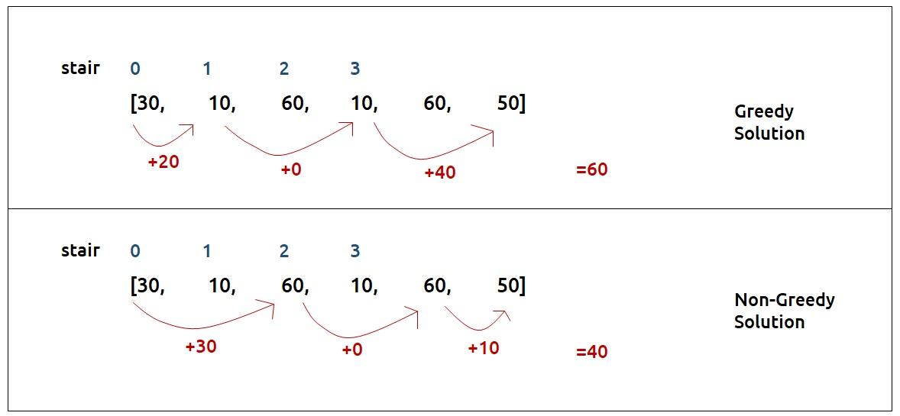
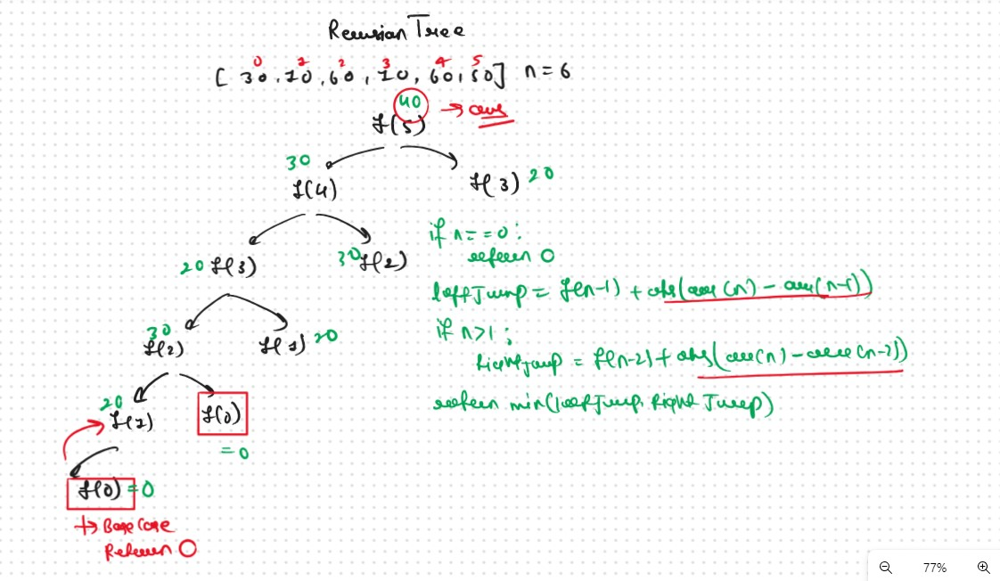

JB TAK FODEGA NHI .... TB TK CHODEGA NHI .... (MAANG)


DPL3 Frog Jump I
Given a number of stairs and a frog, the frog wants to climb from the 0th stair to the (N-1)th stair. At a time the frog can climb either one or two steps. A height[N] array is also given. Whenever the frog jumps from a stair i to stair j, the energy consumed in the jump is abs(height[i]- height[j]), where abs() means the absolute difference. We need to return the minimum energy that can be used by the frog to jump from stair 0 to stair N-1.
Example:
This Problem is Based on the Prevesouly that Problem that we learned in DPL2. only some term will be changed.
As the problem statement states to find the minimum energy required, two approaches should come to our mind, greedy and dynamic programming.
First, we will see why a greedy approach will not work?
Greedy: Find the Min for the Every Steps
The total energy required by the frog depends upon the path taken by the frog. If the frog just takes the cheapest path in every stage it can happen that it eventually takes a costlier path after a certain number of jumps. The following example will help to understand this.  Therefore a greedy solution will not work and we need to try all possible paths to find the answer.Recursice Approch
Again we follow the Same Concept that we follow in the Preveious DPL2 Lecture we find the one steps and two steps and return the Min of both.
Steps to form the recursive solutionStep 1: Express the problem in terms of indexes
Step 2: Try all the choices to reach the goal.
Recursion Tree
 Once we form the recursive solution, we can use the approach told in Dynamic Programming Introduction to convert it into a dynamic programming.png)
.png)
Sb Mai He Kru ...
Khud Bhi Kr le Khuch ..... Nalayk
Time & Space Complexity
Time Complexity: O(2 ^ N)Reason: Exponential Time we find out the all the Possible Path
Space Complexity: O(N)
Reason: We are using a recursion stack space(O(N))
Memoization Approch
Steps to convert Recursive code to memoization solution:Recursion Tree
.png)
.png)
Sb Mai He Kru ...
Khud Bhi Kr le Khuch ..... Nalayk
Time & Space Complexity
Time Complexity: O(N)Reason: The overlapping subproblems will return the answer in constant time O(1). Therefore the total number of new subproblems we solve is ‘n’. Hence total time complexity is O(N).
Space Complexity: O(N)
Reason: We are using a recursion stack space(O(N)) and an array (again O(N)). Therefore total space complexity will be O(N) + O(N) ≈ O(N)
Tabulation Approch
Tabulation is a ‘bottom-up’ approach where we start from the base case and reach the final answer that we want and Memoization is the Top-down Approch.Steps to convert Recursive Solution to Tabulation one.
.png)
.png)
Sb Mai He Kru ...
Khud Bhi Kr le Khuch ..... Nalayk
Time & Space Complexity
Time Complexity: O(N)Reason: We are running a simple iterative loop
Space Complexity: O(N)
Reason: We are using an external array of size ‘n+1’.
Space Optimization
If we closely look at the relation,
if we solved the problem using thabulation and in these problem we used the concept of the dp[i-1] , dp[i-2] then 100% Space Complexity Possible in that types of the Problems
dp[i] = min(dp[i-1],dp[i-2])
we see that for any i, we do need only the last two values in the array. So is there a need to maintain a whole array for it?
The answer is ‘No’. Let us call dp[i-1] as prev and dp[i-2] as prev2. Now understand the following illustration.

.png)
.png)
Sb Mai He Kru ...
Khud Bhi Kr le Khuch ..... Nalayk
Time & Space Complexity
Time Complexity: O(N)Reason: We are running a simple iterative loop
Space Complexity: O(1)
Reason: We are not using any extra space Only Used a 2 Variables fro Storing the Prev Result.